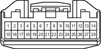

Код детали
W7
Каталожный номер
90980-12555
Цвет
Белый
Технические характеристики
Жгуты проводов для ремонта

Система
Аудиосистема (6-канальная, для моделей без системы навигации)
Аудиосистема (9-канальная, для моделей без системы навигации)
Аудиосистема (для моделей с системой навигации)
Автоматическое противобликовое зеркало с электрохромным покрытием и компасом
Иммобилайзер двигателя (для моделей с системой посадки и запуска)
Система посадки и запуска
Передние стеклоочиститель и стеклоомыватель (для моделей с правосторонним рулевым управлением и автоматическими стеклоочистителями)
Освещение салона
Монитор "Multi-Terrain" (для моделей с системой навигации)
Система навигации
Система помощи при парковке (монитор помощи при парковке / монитор заднего вида и монитор переднего и бокового вида с широкими углами обзора) (для моделей с системой навигации)
Система помощи при парковке (сенсорная система помощи при парковке TOYOTA) (с 8 датчиками, для моделей с системой навигации)
Люк
Система запуска (для моделей с системой посадки и запуска)
Система блокировки рулевого управления (для моделей с системой посадки и запуска)
Противоугонная система
Система дистанционной блокировки дверей (для моделей с системой посадки и запуска)
Система дистанционной блокировки дверей (для моделей без системы посадки и запуска)